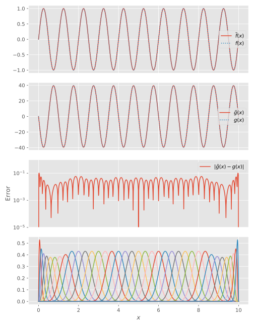

Differentiating functions
We proceed as indicated in Solving equations:
julia> function find_second_derivative(B, f::Function)
S = B'B
D = Derivative(axes(B,1))
∇² = B'D'D*B
# Project function onto B-spline basis
cf = B \ f
# Find derivative
cg = S \ ∇²*cf
cf,cg
end
find_second_derivative (generic function with 1 method)
julia> t = LinearKnotSet(10, 0, 10, 30);
julia> B = BSpline(t)[:,2:end-1]
BSpline{Float64} basis with LinearKnotSet(Float64) of order k = 10 on 0.0..10.0 (30 intervals), restricted to basis functions 2..38 ⊂ 1..39Until other boundary conditions are implemented, second order derivatives can only be reliably computed for functions which vanish on the boundaries:
julia> cf,cg = find_second_derivative(B, x -> sin(2π*x))
([0.233234, 0.695737, 1.29447, 1.39553, -0.243123, -3.89321, 0.674553, 5.76264, -5.77088, -0.0104052 … 0.0104052, 5.77088, -5.76264, -0.674553, 3.89321, 0.243123, -1.39553, -1.29447, -0.695737, -0.233234], [-9.54927, -26.7923, -52.0097, -54.1103, 8.69076, 154.459, -27.2137, -227.101, 227.581, 0.568577 … -0.568577, -227.581, 227.101, 27.2137, -154.459, -8.69076, 54.1103, 52.0097, 26.7923, 9.54927])